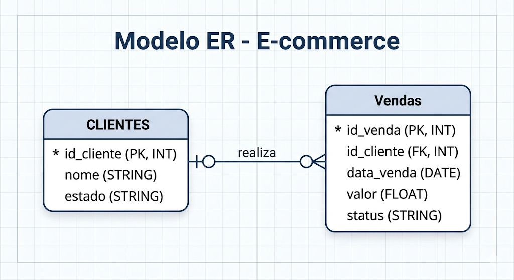

🌊 Delta Lake
O que é?
O Delta Lake é um formato de armazenamento open-source que adiciona uma camada de confiabilidade sobre o Data Lake. Ele traz transações ACID, controle de esquema e Time Travel (viagem no tempo) para o Apache Spark.
Principais características
| Recurso | Descrição |
|---|---|
| ✅ Transações ACID | Garante consistência mesmo com falhas |
| 📜 Delta Log | Histórico de todas as operações |
| ⏱️ Time Travel | Consulta versões anteriores dos dados |
| 🔄 Schema Evolution | Alteração de esquema sem recriar tabelas |
| 🔀 MERGE | Upsert eficiente de dados |
Como usamos no projeto
Configuração
builder = pyspark.sql.SparkSession.builder.appName("DeltaLab") \
.config("spark.sql.extensions", "io.delta.sql.DeltaSparkSessionExtension") \
.config("spark.sql.catalog.spark_catalog",
"org.apache.spark.sql.delta.catalog.DeltaCatalog")
spark = configure_spark_with_delta_pip(builder).getOrCreate()
Modelo ER

Operações CRUD
📥 INSERT — Salvando dados no Delta Lake
df_sul = filter_southern_region(df_vendas.join(df_clientes, "id_cliente"))
df_sul.write.format("delta").mode("overwrite").save("../data/delta/vendas_sul")
Resultado:
| id_cliente | id_venda | valor | status | estado |
|---|---|---|---|---|
| 101 | 1 | 250.5 | concluido | SC |
| 102 | 2 | 120.0 | concluido | RS |
| 101 | 4 | 50.0 | concluido | SC |
| 104 | 5 | 1500.0 | concluido | PR |
✏️ UPDATE — Aumentando valor em 10%
spark.read.format("delta").load("../data/delta/vendas_sul") \
.createOrReplaceTempView("vendas_delta")
spark.sql("UPDATE vendas_delta SET valor = valor * 1.10 WHERE id_venda = 1")
Resultado: Venda 1 passou de 250.5 → 275.55 ✅
🗑️ DELETE — Removendo uma venda
spark.sql("DELETE FROM vendas_delta WHERE id_venda = 3")
Resultado: Venda 3 removida da tabela ✅
Por que Delta Lake?
O Delta Lake foi escolhido por sua excelente integração com PySpark e por ser o formato padrão do Databricks. Ideal para pipelines onde a confiabilidade dos dados é prioridade.